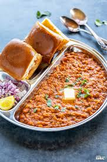

Recipe for Pav Bhaji
Recipes

Description
Pav Bhaji is a popular Indian street food that originated in Mumbai and has since become a favorite across the country. It consists of a spicy, flavorful vegetable mash (bhaji) made with potatoes, tomatoes, peas, and other vegetables, all cooked together with a generous amount of butter and a special blend of spices.
This thick, aromatic curry is served with soft, butter-toasted bread rolls (pav) and topped with chopped onions, fresh coriander, and a squeeze of lemon for added zest. The combination of the rich, buttery bhaji with the crispy-yet-soft pav creates a delicious and satisfying dish that is enjoyed by people of all ages. Whether eaten as a snack or a full meal, pav bhaji is a comforting and indulgent treat that embodies the vibrant flavors of Indian street food.
Ingredients
- Potatoes
- Tomatoes
- Pav Bhaji Masala
- Pav
Steps
- Prepare the Vegetables: Boil potatoes, peas, cauliflower, and carrots until soft. Mash lightly.
- Cook the Bhaji: Heat butter and oil in a pan. Add cumin seeds, then onions, and sauté until golden.
- Add ginger-garlic paste and cook for a minute.
- Add tomatoes and cook until soft.
- Add capsicum and cook for 2 minutes.
- Add pav bhaji masala, chili powder, turmeric, and salt. Mix well.
- Add boiled mashed vegetables, mash further, and mix.
- Add water as needed and simmer for 5-7 minutes.
- Add garam masala and kasuri methi. Mix well.
- Finish with butter and coriander leaves.
- Toast the Pav: Heat butter on a griddle, sprinkle pav bhaji masala, and toast sliced pav until golden.
- Serve: Plate the bhaji, top with butter, garnish with onions, coriander, and lemon wedges. Serve with pav.